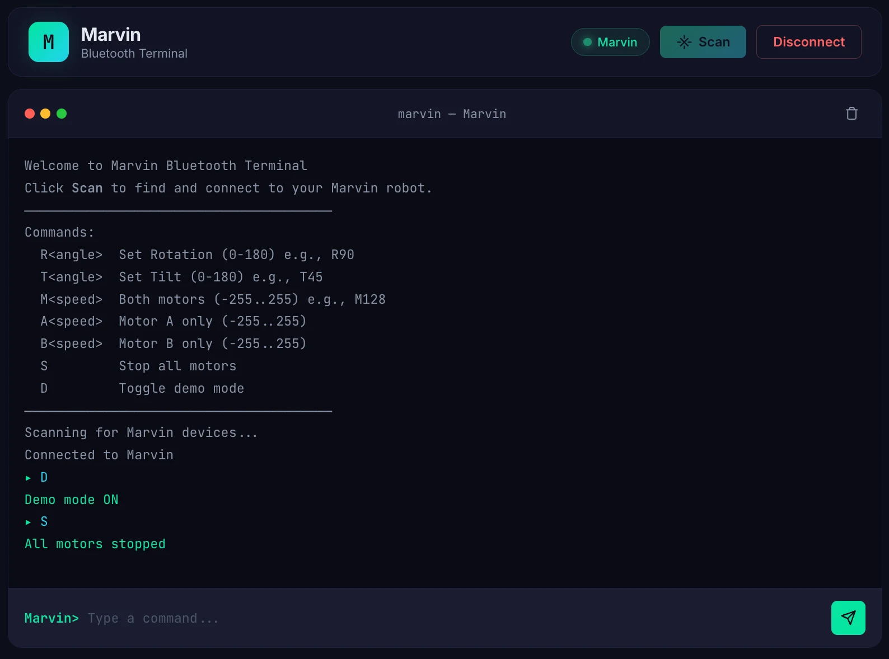

Documentation · Drive
Drive
Control Marvin with seven text commands over USB serial or Bluetooth. Use the browser controller for manual driving, or enable demo mode to run a programmed movement sequence.
Setup
Connect
The controller is a static web page that connects to Marvin through Web Bluetooth. It needs a secure context and a browser that supports Web Bluetooth.
Requirement — a secure context
It must be served, not opened. Web Bluetooth exists only over https:// or localhost. Double-click the file and the API is undefined.
$ cd controller && ./serve.sh
→ http://localhost:3000 · Scan · choose “Marvin”
Requirement — browser support
| Browser | Web Bluetooth |
|---|---|
| Chrome — desktop, Android | Yes |
| Edge | Yes |
| Opera | Yes |
| Firefox | No |
| Safari — macOS, iOS | No |
Marvin accepts one Bluetooth client at a time. If it is missing from the picker, check its power and disconnect any other app connected to it.

Controls
The command language
One line-based text protocol, identical over USB serial and Bluetooth. Case-insensitive, one command per line. The shaded band on each scale is the range the firmware will accept.
Head rotation — pan
Full sweep, centred at 90.
e.g. R90
Head tilt
Clamped to protect the neck.
e.g. T45
Both motors
Negative reverses.
e.g. M128
Motor A — one track
Pivot by driving one side.
e.g. A200
Motor B — the other
Inputs wired inverted; positive is still forward.
e.g. B200
Stop
Both tracks to zero. The head holds its angle.
Toggle demo mode
Put it on the floor before you send this.
Values are clamped, not rejected
Ask for T200 and you get 85° — the mechanical limit — not an error. The firmware limits out-of-range values to the supported range.
Any movement cancels the demo
A manual movement command or the stop command cancels demo mode.
Use a BLE UART terminal
Use a terminal app that supports the Nordic UART Service to send commands to Marvin. The UUIDs are in Reference.
Demo mode
Programmed movement
Send D and Marvin runs a hand-choreographed sequence: arcs, pivots, straight runs, and pauses where the head sweeps as though scanning. The head usually moves before the body turns.
The sequence is stored in the firmware. Different movement durations and pauses make the motion less repetitive. The annotated sequence is on the home page.
If something goes wrong
Troubleshooting
Start with these checks if you have trouble connecting or driving.
| Symptom | Cause |
|---|---|
| Scan button does nothing | Not a secure context — use localhost, not file:// |
| “Web Bluetooth is not supported” | Firefox or Safari — use Chrome or Edge |
| Marvin not in the device picker | Not powered, or already connected elsewhere — Marvin accepts one client at a time |
| Connects, then drops immediately | Low battery — the microcontroller browns out when the motors draw current |
| Robot lurches on power-up | Motor pins floating during boot |
Continue to Reference: protocol, Bluetooth service, pin map, parts and licensing